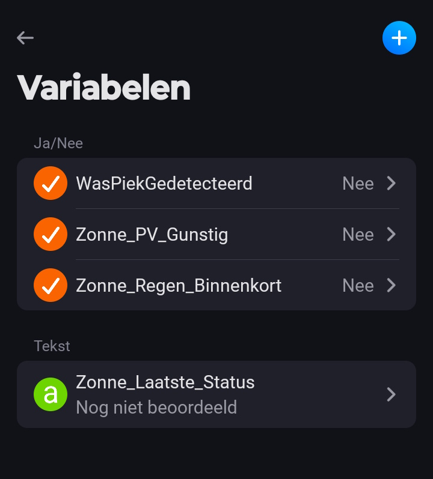
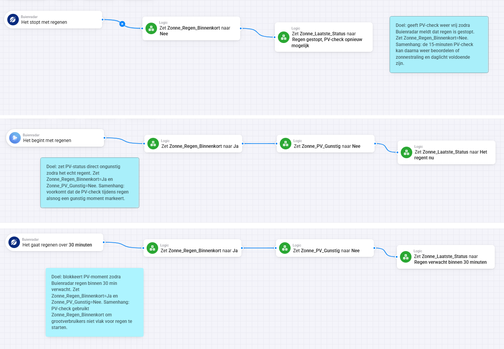
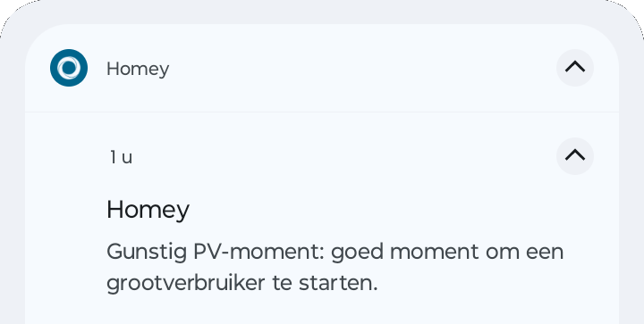

Zonnepanelen leveren niet de hele dag evenveel op. Toch kun je met Homey al vrij slim bepalen wanneer het waarschijnlijk een goed moment is om bijvoorbeeld de wasmachine, vaatwasser, boiler of een andere verbruiker te starten.
In deze tutorial bouwen we geen exacte opbrengstvoorspelling, maar een praktische beslislaag: is er daglicht, komt er geen regen aan en is de actuele zonnestraling hoog genoeg? Dan zetten we een Homey Logic-variabele op gunstig. Die variabele kun je later gebruiken om meldingen te sturen of apparaten automatisch te schakelen.
Wat leer je in deze tutorial?
Je leert hoe je een kleine set samenwerkende Homey Advanced Flows maakt rondom zonnepanelen en weersinformatie.
- Weerinformatie gebruiken → je gebruikt Buienradar om regenmomenten te herkennen en een weerapparaat met zonnestraling om de actuele opbrengstkans te beoordelen.
- Flows onderhoudbaar maken → je werkt met duidelijke variabelen, vaste naamgeving en notities in de flow zelf.
Aan het einde heb je een basis die niet direct apparaten hoeft te schakelen, maar wel betrouwbaar een status bijhoudt: is dit een gunstig PV-moment of niet?
Voor wie is deze tutorial?
Deze tutorial is bedoeld voor Homey-gebruikers die zonnepanelen hebben of willen inspelen op zonnige momenten in huis. Je hoeft geen programmeur te zijn, maar enige ervaring met Homey Flows, Advanced Flow en Logic-variabelen is handig. De aanpak is vooral interessant als je eerst veilig wilt testen met variabelen voordat je apparaten automatisch laat starten.
Wat heb je nodig?
- Een werkende Homey-installatie met toegang tot Advanced Flow.
- De Buienradar-app in Homey, zodat je triggers zoals “het gaat regenen over 30 minuten” kunt gebruiken.
- Een weerapparaat in Homey dat actuele zonnestraling kan leveren, bijvoorbeeld als waarde in W/m².
- Drie Homey Logic-variabelen:
Zonne_Regen_Binnenkort,Zonne_PV_GunstigenZonne_Laatste_Status. - Een map in Homey met de naam Zonne Flows, zodat alle flows overzichtelijk bij elkaar staan.
Stap-voor-stap uitleg
1. Maak eerst de Logic-variabelen aan
De flows werken het prettigst wanneer je niet alles direct aan apparaten koppelt, maar eerst met variabelen werkt. Die variabelen vormen de tussenlaag tussen weerinformatie en latere automatisering.
- Maak
Zonne_Regen_Binnenkortaan als Ja/Nee-variabele. - Maak
Zonne_PV_Gunstigaan als Ja/Nee-variabele. - Maak
Zonne_Laatste_Statusaan als tekstvariabele.

2. Maak de Buienradar-flows
De Buienradar-flows bepalen of regen de zonne-logica tijdelijk moet blokkeren. Maak bij voorkeur drie Advanced Flows: Zonne Flows - Regen komt eraan ADV, Zonne Flows - Regen gestart ADV en Zonne Flows - Regen gestopt ADV. Laat ze tijdens het bouwen uitgeschakeld staan totdat je ze gecontroleerd hebt.
3. Gebruik duidelijke flowlogica
De regenflows hoeven niet ingewikkeld te zijn. Ze zetten alleen variabelen. Daardoor blijft de hoofdflow voor PV-momenten schoon en overzichtelijk.
Buienradar: het gaat regenen over 30 minuten
→ Zonne_Regen_Binnenkort = Ja
→ Zonne_PV_Gunstig = Nee
→ Zonne_Laatste_Status = Regen verwacht binnen 30 minuten
Buienradar: het begint met regenen
→ Zonne_Regen_Binnenkort = Ja
→ Zonne_PV_Gunstig = Nee
→ Zonne_Laatste_Status = Het regent nu
Buienradar: het stopt met regenen
→ Zonne_Regen_Binnenkort = Nee
→ Zonne_Laatste_Status = Regen gestopt, PV-check opnieuw mogelijk4. Bouw de PV-check elk kwartier
De belangrijkste flow is Zonne Flows - PV check elk kwartier ADV. Die draait elke 15 minuten en beoordeelt of het moment gunstig genoeg is. De logica is: na zonsopkomst, voor zonsondergang, geen regen binnenkort en zonnestraling hoger dan 400 W/m². Alleen als al die voorwaarden kloppen, wordt Zonne_PV_Gunstig op Ja gezet.
5. Voeg notities toe voor later onderhoud
Een flow die vandaag logisch voelt, kan over zes maanden onduidelijk zijn. Voeg daarom in elke Advanced Flow een korte notitie toe. Beschrijf daarin wat de flow doet, welke variabelen hij wijzigt en hoe hij samenhangt met de andere Zonne Flows.
Integratie met Homey
De kracht van deze aanpak zit in de scheiding tussen meten, beoordelen en schakelen. Buienradar zet de regenstatus. Het weerapparaat levert zonnestraling. De PV-check combineert die gegevens en zet alleen een centrale variabele op gunstig of ongunstig.
Daarna kun je Zonne_PV_Gunstig gebruiken als voorwaarde in andere flows. Begin bij voorkeur met meldingen, zodat je eerst kunt controleren of de logica in de praktijk klopt.
- Stuur een melding wanneer
Zonne_PV_GunstigJa wordt. - Gebruik de variabele later als voorwaarde voor wasmachine, vaatwasser of boiler.
- Combineer de zonneflow eventueel met stroomprijsflows als je ook dynamische tarieven gebruikt.

Wat kun je hierna?
Als de basis goed werkt, kun je de flow uitbreiden. Denk aan een strengere drempel voor zonnestraling, een aparte status voor “zeer gunstig”, een melding naar je telefoon of een koppeling met apparaten die je alleen wilt starten bij gunstige zonne-omstandigheden.

Veelgemaakte fouten en aandachtspunten
- Zet nieuwe flows eerst uitgeschakeld klaar en controleer de verbindingen voordat je ze activeert.
- Gebruik duidelijke statusmeldingen. “Geen gunstig PV-moment” kan komen door nacht, regen of te lage zonnestraling.
- Laat deze logica niet direct zware apparaten schakelen voordat je een paar dagen hebt getest of de variabelen doen wat je verwacht.
Conclusie
Met een paar goed gestructureerde Homey Advanced Flows kun je een praktische zonne-status maken voor je slimme huis. Buienradar voorkomt dat de flow vlak voor of tijdens regen te optimistisch wordt. De zonvoorwaarden zorgen dat de check alleen overdag loopt. De actuele zonnestraling maakt de beoordeling concreter. Door alles te koppelen aan duidelijke Logic-variabelen houd je de automatisering overzichtelijk en kun je later veilig uitbreiden naar meldingen of automatisch schakelen.